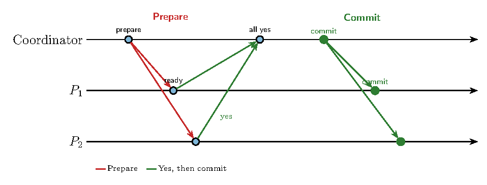
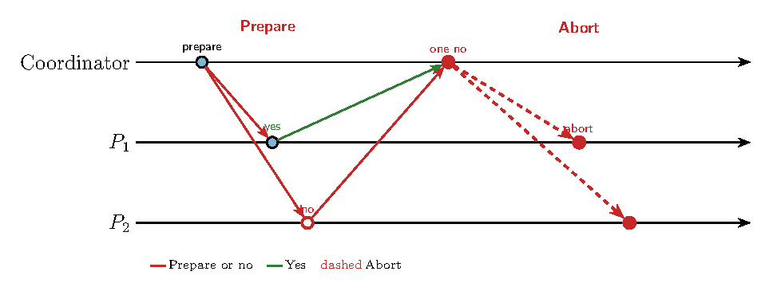
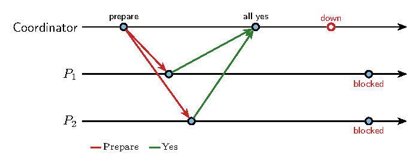
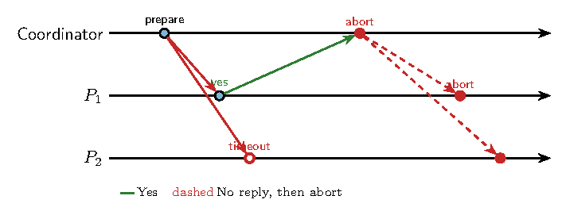
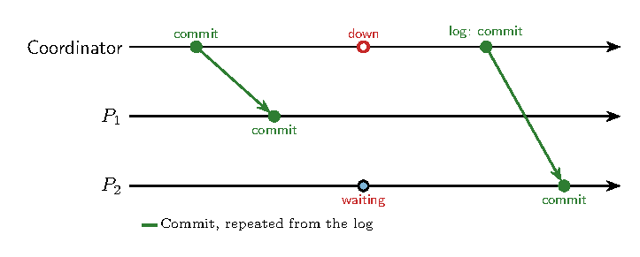
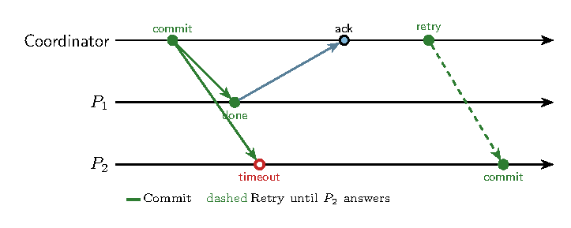
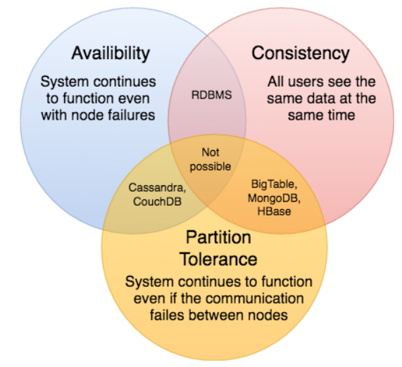

Sistemas Actuales de Computación
Transaction: an operation composed of a sequence of a discrete steps.
Example, book a flight from Palma to San Francisco
All the steps must be completed for the transaction to be committed. Otherwise, the transaction is aborted and the state of the system reverts: rollback
Deal with crash failures of processes and omission failures in communication, but not any type of arbitrary (or Byzantine) behavior.
Requirements:
Three bank accounts: A=100, B=200 y C=300
T.A
First, T.A and then TB
A = 80, B=242, C=278
Three bank accounts: A=100, B=200 y C=300
T.A
But, T.A || TB
Three bank accounts: A=100, B=200 y C=300
T.A || TB
totalBalance = 500
A = 0, B = 300, C = 300
The coordinator asks every participant to prepare. It sends commit only after every reply is yes.

The goal is an agreement to commit from every participant.
Each participant checks that it can commit: it takes the locks, validates the data, and writes a prepare record in its write-ahead log (WAL). It flushes that record to disk before it replies. The intent is durable before the action, so a crash can still finish the decision.
Then it answers yes or no. One no aborts the whole transaction. The coordinator tells every participant to roll back, including those that had already answered yes.

Each participant keeps a write-ahead log: the record of a decision is on disk before the decision takes effect. After a crash the process reads the log and finishes the same decision. It does not choose again.
In a replicated participant the same records travel to the other replicas through Raft or Paxos, so the vote survives the loss of one node.
\(P_1\) votes yes on transaction \(T\). Its log, flushed in this order:
1 begin T
2 prepare T flushed, then the yes is sent
3 commit T written only after the coordinator says commitIn phase 1 the coordinator has sent prepare and is still waiting for the votes.
Coordinator dies after every yes. No commit and no abort was sent. \(P_1\) and \(P_2\) stay blocked: a yes is a promise, and only the coordinator can release it.

A participant stays silent. \(P_1\) has voted yes and \(P_2\) does not answer before the timeout. The coordinator has not committed, so it aborts and tells both to roll back.

The decision is already in the coordinator’s log. A crash no longer changes it.
Coordinator dies after sending commit to \(P_1\) and before \(P_2\) has it. On recovery it reads the log and sends that same commit. It does not open a new vote.

A participant stays silent after commit. \(P_1\) has applied it. The coordinator keeps resending until \(P_2\) answers. On recovery \(P_2\) reads its log and applies the decision it is given.

It is a blocking protocol!
It is expensive - Message complexity: common case for \(n\) participants + 1 TC: \(3n\) messages.
WAL Playground on PostgreSQL
U7-DistributedTransictions
└── WAL-postgres
├── demo.sql
├── docker-compose.yml
├── README.md <-!!
└── run_demo.shAlso, WAL is on:
An extension of the 2PC: Split the second phase in two parts:
2A. Precommit (Preparation phase)
2B. Commit phase (Final commit phase, same as in 2PC)
PHASE 1: Voting phase (CanCommit)
– Coordinator sends CanCommit? queries to participants & gets responses (Find out if everyone agrees to commit)
– If the coordinator gets a timeout from any participant, or any NO replies are received: Send an abort to all participants
– If a participant times out waiting for a request from the coordinator: it aborts itself (assume coordinator crashed)
– Else continue to phase 2
PHASE 2: Prepare to commit phase
– Coordinator sends a prepare message to all participants: pre-commit
– Participants acknowledge that they are ready to commit and log this state durably. They do not make changes permanent; they merely prepare, ensuring that they can either commit or abort without blocking.
– If a participant times out: assume it crashed; send abort to all participants
PHASE 3: Finalize phase
– Coordinator gets OK messages from all participants. We need to hear from all before proceeding so we can be sure the state of the protocol can be properly recovered if the coordinator dies. Let all participants know the decision to commit.
– Coordinator sends Final Commit message to all the participants and get responses from all
– If participant times out: contact any other participant and move to that state (commit or abort)
– If coordinator times out: that’s ok
Non-blocking: 3PC reduces the chance of blocking by allowing participants to make progress independently after the pre-commit phase.
Fault tolerance: By introducing the pre-commit state, 3PC ensures that no participant commits unless everyone is ready, avoiding inconsistent states even if some nodes fail.
Recovery: A new coordinator can be elected if the original one fails, and by querying participants about their state, it can make safe decisions.
but…
Scaling, Consistency and Reliance
Example: A database has a 99.9% availability:
If a transaction requires 5 databases. Total availability: 99.5%
The delays to achieve consistency can hurt business:
A shared-data system cannot, during a network partition, be both consistent and available (Gilbert and Lynch 2002).
Eric Brewer stated it as a conjecture in 2000.
Gilbert and Lynch proved it for a replicated register.
Twelve years later Brewer narrowed the slogan: the choice is made while the partition lasts, not for the whole life of the system (Brewer 2012).
A partition splits the replicas into two groups that cannot exchange messages.
Outside a partition the system can be consistent and available. The pairs people quote are the behaviour during the partition.
CA, by refusing to partition. One machine, or one rack with a reliable interconnect.
CP: give up availability. A node that cannot see a quorum waits. The answer is late, and it is the same answer.
AP: give up consistency. Every node answers with the data it has. Copies catch up later. DNS, web caches, etc. are in this family.

ACID is the CP side: wait, then commit one value.
BASE is the AP side: answer now, and let the copies converge.
| ACID | BASE | |
|---|---|---|
| Goal | The commit | Availability |
| Availability | Can suffer | High BAsically Available |
| Consistency | Strong | Eventual: stale data is allowed for a while |
| Isolation | Required | Best effort |
| Durability | Local persistence | Immediate replication |
| Transactions | Nested transactions (Hard State) | A simpler model (Soft State), harder for the application |
| Access to data | Pessimistic: locking | Optimistic |
| Speed | Waits for the locks and for the commit | Faster |
¿Qué estilo de partición CAP pretenden estas bases de datos?